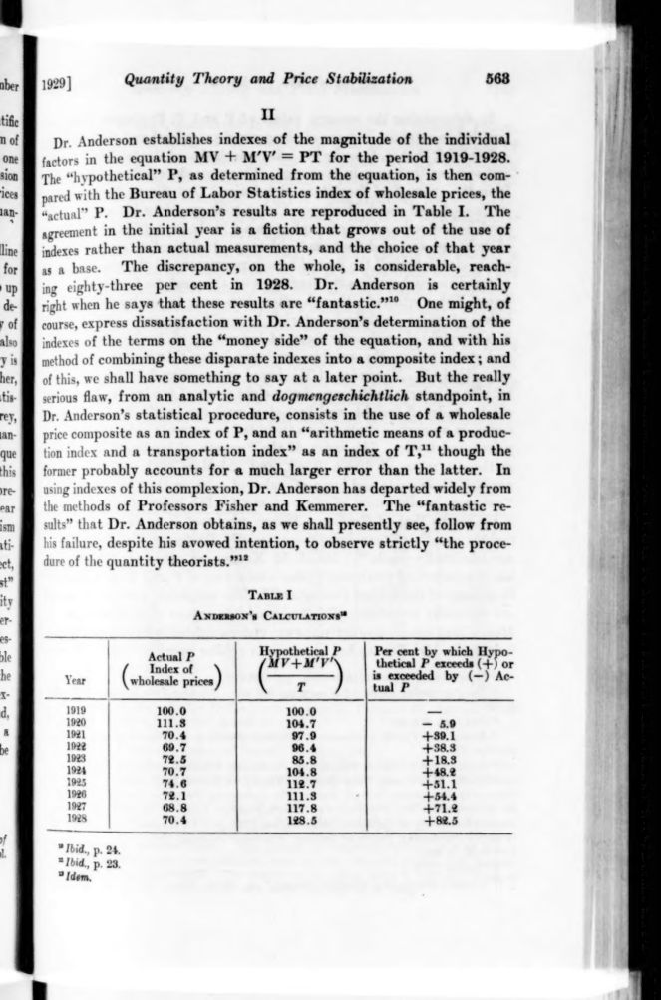

Kendrick, 1929: não foi o imposto que segurou as ações
Leitura: 5 min
M. Slade Kendrick contesta o National City Bank, para quem o imposto sobre ganhos de capital impedia os grandes investidores de vender ações e inflava o crédito, e aponta a tendência de alta da bolsa como causa.


Em abril de 1929, o National City Bank dedicou uma edição especial de seu boletim a uma tese: o imposto federal sobre ganhos líquidos de capital era em grande parte responsável pelas dificuldades de crédito do momento. Segundo o banco, citado por M. Slade Kendrick, da Cornell University, o imposto criara artificialidade nos mercados de títulos, no crédito e nos juros, dera às ações valores de escassez e aumentara enormemente os empréstimos, porque investidores com grandes lucros se recusavam a vender e se apoiavam nos bancos para continuar comprando. O banco propunha revogar as regras sobre ganhos e perdas de capital.
Kendrick, no número de dezembro de 1929 da American Economic Review, examina a tese à luz de dois fatores: as próprias regras do imposto de renda e a tendência dos preços das ações.
Como funcionava o imposto?
As regras valiam apenas para ativos mantidos por mais de dois anos. A tributação dos ganhos era opcional: qualquer contribuinte que não fosse empresa podia pagar doze e meio por cento sobre os ganhos líquidos de capital, em vez das alíquotas normal e adicional do imposto de renda. A dedução das perdas, ao contrário, era obrigatória e limitada a doze e meio por cento da perda, e não podia reduzir o imposto que seria pago sobre a renda calculada sem essa regra; podia, porém, aumentá-lo.
Nos dias ou semanas antes de completar dois anos, reconhece o autor, as regras davam incentivos claros: quem tinha prejuízo ganhava em vender antes, para deduzir a perda inteira; quem tinha lucro e alíquota marginal acima de doze e meio por cento ganhava em esperar. Passado o prazo, porém, Kendrick não vê como as regras pudessem levar os grandes contribuintes a não realizar lucros. Se tinham efeito, era o inverso: num negócio arriscado como a especulação com ações, uma dedução de doze e meio por cento sobre as perdas não compensa um imposto de doze e meio por cento sobre os ganhos, e a penalidade sobre as perdas pesa mais.
O que mostram os exemplos?
Kendrick dá dois exemplos numéricos. No primeiro, o contribuinte perde dinheiro e ainda paga imposto. No segundo, um investidor solteiro tem renda ordinária anual de 200.000 dólares e lucro de 100.000 dólares em ações compradas por 300.000 e mantidas por mais de dois anos. Se as conserva e as vende um ano depois com prejuízo, paga ao todo 70.230 dólares de impostos nos dois anos. Se vende logo, paga o imposto sobre o ganho, reinveste e vende as novas ações um ano depois pelos mesmos 200.000 dólares, paga 53.865 dólares, porque pode deduzir integralmente a perda das ações mantidas por menos de dois anos.
Para o autor, a diferença é um incentivo a realizar lucros em ações de mais de dois anos e a correr riscos só onde as perdas são dedutíveis por inteiro.
O que segura o especulador?
O fator muito mais importante, para Kendrick, é a tendência dos preços. Num mercado em alta, quem vende uma ação tende a vê-la subir acima do preço de venda, experiência das mais irritantes para o especulador de longo prazo, o único de que o autor trata. O efeito é torná-lo mais hesitante em vender; se precisa comprar outra ação, inclina-se a tomar emprestado contra o valor valorizado da sua e ficar com as duas. Quanto mais dura a alta, mais se forma uma disposição psicológica contra a venda.
Nos últimos anos, observa o autor, as autoridades divergiam sobre o lugar desse mercado na história das altas, mas todas concordavam que uma alta extraordinária estava em curso havia anos. Nele, seria surpreendente se os especuladores tivessem liquidado suas posições sempre que queriam comprar outras ações.
“É muito melhor para ele vender e embolsar, livre do imposto, 87 centavos e meio de cada dólar de seu lucro do que manter as ações até que seus lucros encolham.” (It is far better for him to sell and to net, clear of the tax, ... than it is to hold until his profits have shrunk)
Iniciada uma longa queda, o especulador tem todos os incentivos para vender, e o imposto não o impedirá. A causa da retenção das ações, para Kendrick, estava na própria alta, e não na lei tributária.
Na minha leitura
Na minha leitura, o texto foi escrito durante a alta da bolsa e publicado depois da quebra de outubro de 1929, embora o autor não a mencione; sua última seção, sobre o que acontece quando a crista do mercado é ultrapassada, ganha por isso um peso que ele não reivindica. O argumento, de economia tributária aplicada, se contrapõe a uma tese de banco que culpava a tributação pelos excessos do crédito especulativo.
Glossário
- Ganho líquido de capital
- Lucro obtido na venda de ativos mantidos por mais de dois anos, que o contribuinte podia tributar à alíquota especial de doze e meio por cento.
- Alíquota adicional (surtax)
- Imposto progressivo cobrado sobre as rendas mais altas além do imposto normal.
- Especulador de longo prazo
- Tradução de long-pull speculator: quem compra ações para mantê-las por um período longo, à espera de valorização.
Fontes
- The Tax on Capital Net Gains — M. Slade Kendrick (Cornell University) (pp. 648–651). Internet Archive (número completo, PDF)
- Edição completa, com os demais artigos: Nº 215 do Arquivo.
Documento em domínio público (EUA, publicado antes de 1931), via JSTOR Early Journal Content e Internet Archive. Resumo e comentário do autor deste site, sem afiliação com a American Economic Association. Encontrou um erro? Escreva: a correção é publicada no próprio texto, com data.
← Hewett, 1929: o custo governa o valor do capital, mas só no longo prazo ↑ Nº 215 · Burns e a teoria quantitativa, Wolfe e a renda da terra, Foenander e a frota estatal australiana, a disputa dos pequenos empréstimos